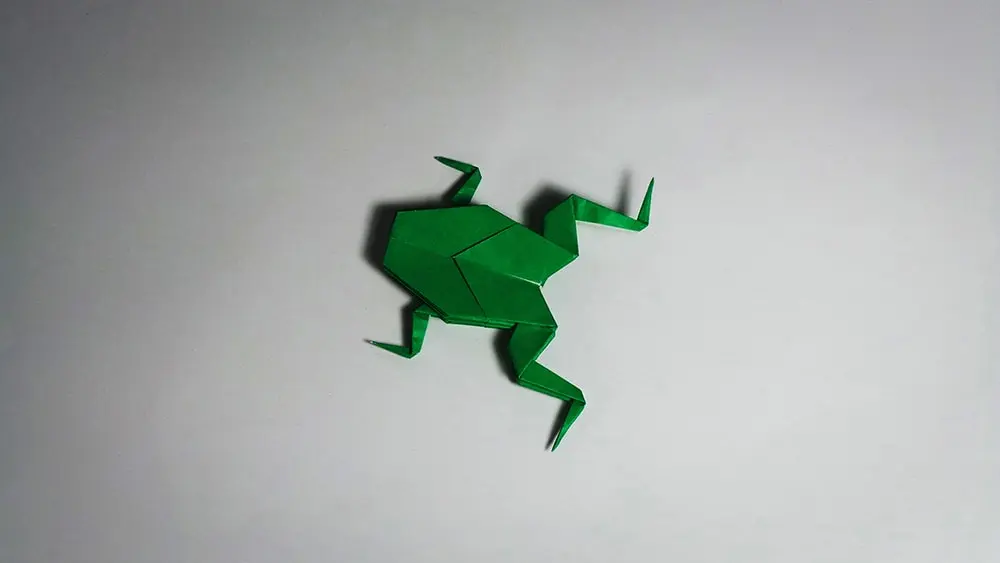
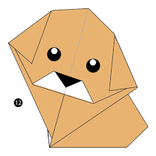

Camel
- camel's ears are furry
- Camel can move easily acrose the sand bacause of its specially designed feet
- When they find water, they will drink as much as possible.

Chameleon
- Chameleons are reptiles that are part of the iguana suborder
- Chameleons skin color is an important part of communication among Chameleons
- Most Chameleons have a prehensile tail that they use to wrap around tree branches

Pigeon
- Pigenos are incredibly complex and intelligent animals
- Pigenos are renownrd for their outstanding navigational abilities
- Pigenos have excellend hearing abilities.

Teddy Bear
- Teddy bears got their name from the story that Teddy Roosevelt refused to shoot a bear cub while on a hunting trip in 1902.
- The first toy stuffed bear was created by German toymaker Margarete Steiff.
- The Oxford English Dictionary dates the first use of the term teddy bear to 1906.

Teddy Bear
- A giant panda is much bigger than your teddy bear.
- Giant pandas are good at climbing trees and can also swim.
- Pandas go from pink to white and black (or brown).
- Pandas have so many fans because they look cute.
- Pandas are "lazy" — eating and sleeping make their day.

Cicada
- Cicadas are like tiny violins
- Cicadas make noise like toy frogs
- Cicadas kind of ‘sweat’
- They’re underground builders
- They’re super sneaky

frogs
- One gram of the toxin produced by the skin of the golden poison dart frog could kill 100,000 people.
- The female Surinam toad lays up to 100 eggs, which are then distributed over her back. Her skin swells around the eggs until they become embedded in a honeycomb-like structure.
- A frog completely sheds its skin about once a week. After it pulls off the old, dead skin, the frog usually eats it.
- When Darwin’s frog tadpoles hatch, a male frog swallows the tadpoles.
- When a frog swallows its prey, it blinks, which pushes its eyeballs down on top of the mouth to help push the food down its throat.

Dog
- Puppies love games such as hide and seek! Hide and call their name so they can try to find you.
- Dogs can learn more than 1,000 words.
- Big, happy "helicopter" tail wagging is one sign of a really nice dog.
- Puppies then take a year or more to gain the other half of their body weight.
- Puppies grow to half their body weight in the first four to five months!